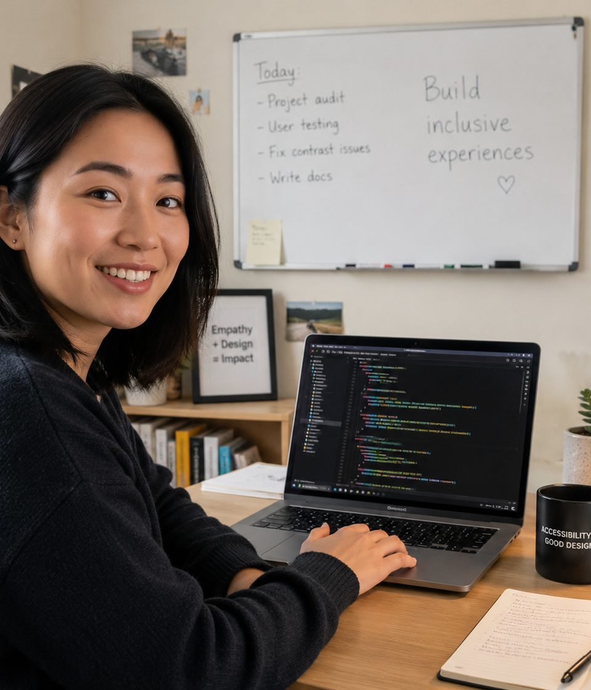

B.S. in Informatics, University of Washington
Focused coursework in human-computer interaction and web technologies, with a senior capstone on assistive-technology usability testing.
<about> Background & experience </about>

I'm a frontend developer based in Portland, Oregon, with seven years of experience building interfaces for healthcare, education, and e-commerce products. My work sits at the intersection of engineering and empathy: I care as much about a screen reader's experience of a page as I do about a sighted mouse user's.
I got into accessibility work after a usability study on a project I'd shipped revealed that keyboard-only users couldn't complete checkout at all. That gap between "it works on my machine" and "it works for everyone" has shaped how I approach every project since — accessibility isn't a pass I run at the end, it's a constraint I design around from the first wireframe.
Outside of client work, I mentor early-career developers through a local coding bootcamp's alumni network and maintain a small open-source library of accessible form components.
Education
Focused coursework in human-computer interaction and web technologies, with a senior capstone on assistive-technology usability testing.
Professional certification covering disability, accessibility, and universal design principles.
Experience
Lead frontend developer for a patient-portal redesign, bringing the product from a 62 to a 100 Lighthouse accessibility score and reducing support tickets related to navigation confusion by a third.
Built the component library for an online course platform, introducing keyboard-navigable video controls and synchronized transcripts adopted across the product.
Maintained and extended a Shopify-based storefront, and ran the team's first formal accessibility audit.
Technical skills
Soft skills
I translate accessibility findings into concrete, prioritized tickets that designers and engineers can act on without a glossary.
I've worked closely with designers, QA, and product managers to bake accessibility into definitions of done, not bolt it on afterward.
I run internal workshops on keyboard testing and screen-reader basics so accessibility knowledge doesn't sit with one person.
I look for the smallest change that removes a real barrier, rather than the most elaborate one.